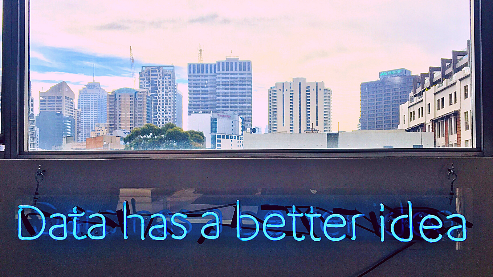

The government can better serve the public when data belongs to everyone

For as long as we’ve been working to improve peoples’ lives through modern software and thoughtful design, we have embraced openness and transparency as values that move all good things forward, faster. When we share what we’ve built as community assets that everyone can use and improve on, we know we’re accelerating the improvement of government services for those who depend on them (that’s all of us!).
This is why we’re ardent supporters of open source solutions and open data initiatives, in addition to our transparent work practices behind the scenes. And it’s why we jumped at the chance to become the chief maintainers of the DKAN open data platform when the opportunity arose. It aligned perfectly with our mission to provide better services through open technologies such as Drupal, which DKAN is built on.
We believe open data can spur innovation and understanding — and that happens most effectively when the data platform and software are open and available to the public. An open-source data platform allows agencies to:
Avoid vendor lock-in
Having ownership over your own open data platform gives you the freedom to change course at any time while benefiting from the community contributions and improvements that support open source projects.
Make limited resources go far
If you’re like many data managers we’ve met, your open data team is hardworking and scrappy. You believe in the raw power of unlocking and releasing data. You may lack a large budget, but you make the most of what you have. Buying closed, proprietary software for your open data program just doesn’t feel right.
If this sounds like you, “open source for open data” could be just the right fit for you. As an open-source platform, DKAN is overseen by vibrant user and developer communities that improve product features, identify and fix bugs, and offer support to users — resulting in improved costs and flexibility for agencies with limited resources.
Pay only for what you need
Many proprietary solutions come with all kinds of fees and services you don’t need, so why pay for them? With DKAN tools, you can build and maintain your own solution — and we’re happy to offer guidance along the way (only as much as you want).
Putting data out there is only half the battle. Governments must develop the capacity to use their data to deliver against their missions with greater speed, agility, and efficiency.
If you do want a little more of a helping hand, we offer services such as:
- Hosting and maintenance
- Data clean-up and tidying
- Customizations to your program’s unique needs
- Migration from your legacy platform
- Helpdesk services and incident monitoring
- Training on the use of DKAN and open data best practices
When data is open, so are opportunities for creativity, collaboration, and innovation. We can help you multiply your impact by efficiently providing the tools you need to begin aggregating, cataloging, and sharing your data — all on your own terms and in accordance with your budget.
Putting data out there is only half the battle. Governments must develop the capacity to use their data to deliver against their missions with greater speed, agility, and efficiency.
The future of open data
In 2021 and over the next few years, we anticipate a reinvigoration of openness and transparency across the federal government — along with the public release of even more rich data. We believe (and expect) that federal agencies should move toward open source and open data by default as a fundamental first principle.
We also realize that putting data out there is only half the battle. Governments must develop the capacity to use their data to deliver against their missions with greater speed, agility, and efficiency.
To that end, we’re committed to supporting publicly funded data and technology that everyone can use. And that’s why DKAN belongs to all of you, as an open-source tool designed to bring greater transparency and accountability to public services.
We welcome your feedback and contributions
- Learn more at getdkan.org
- Check out the demo site at demo.getdkan.org
- Follow development at github.com/GetDKAN/dkan
- Join the conversation at dkan.slack.com.